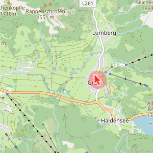
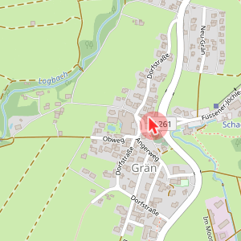
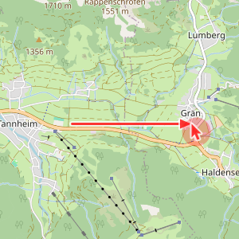
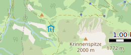
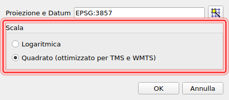
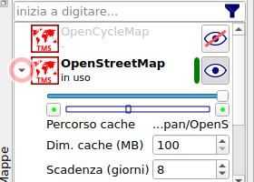
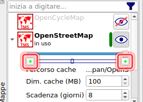
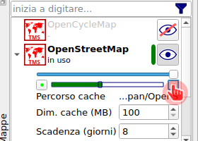
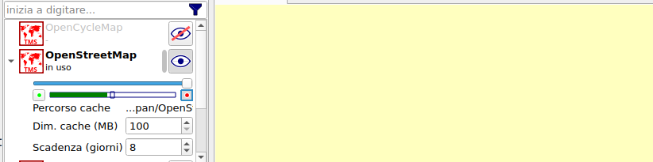

Zoom e spostamento#
Questa pagina mostra come muoverti sulla mappa: ingrandire e ridurre, spostare la mappa e limitare l’intervallo di zoom di una mappa.
Immagini: © OpenStreetMap contributors.
Zoom con la rotella del mouse#

Porta il puntatore del mouse sul punto che vuoi guardare più da vicino, qui il paese di Grän.

Gira la rotella del mouse in avanti per ingrandire, all’indietro per ridurre. Ogni scatto della rotella è un livello di zoom. Il luogo sotto il puntatore del mouse resta dov’è. Qui la rotella ha girato di due scatti in avanti e Grän è ancora sotto il puntatore.
Se il verso ti sembra sbagliato, fai clic su Vista → Inverti rotella del mouse. QMapShack ricorda questa impostazione.
Spostare la mappa#

Trascina la mappa con il tasto sinistro del mouse: tieni premuto il tasto e muovi il mouse. La mappa si sposta con il puntatore; rilascia il tasto quando vedi la parte che ti interessa. Qui trascini la mappa verso destra e Grän si sposta insieme al puntatore.
Con la tastiera#
Fai clic una volta sulla mappa, così che riceva i tasti premuti. Poi premi:
Tasto |
Cosa fa |
|---|---|
+ |
Ingrandisce di un livello, attorno al centro della mappa |
- |
Riduce di un livello, attorno al centro della mappa |
Freccia su |
Sposta la mappa in basso di un quarto della vista, per mostrare cosa c’è sopra |
Freccia giù |
Sposta la mappa in alto di un quarto della vista, per mostrare cosa c’è sotto |
Freccia sinistra |
Sposta la mappa a destra di un quarto della vista, per mostrare cosa c’è a sinistra |
Freccia destra |
Sposta la mappa a sinistra di un quarto della vista, per mostrare cosa c’è a destra |
+ e - funzionano sui tasti principali e sul tastierino numerico.
Livelli di zoom e scala#

La barra della scala, in basso a destra sulla mappa, indica quanto è lunga una distanza con lo zoom attuale. Per nasconderla o mostrarla di nuovo, fai clic su Vista → Visualizza scala.
QMapShack usa livelli di zoom fissi. Per cambiarli, fai clic su Vista → Modifica vista mappa e scegli un’opzione in Scala. Logaritmica passa per scale arrotondate, come 1; 1,5; 2; 3; 5; 7 e 10 metri per pixel.
Quadrato (ottimizzato per TMS e WMTS) raddoppia o dimezza la scala a ogni livello.
Le mappe online sono fatte di immagini quadrate, chiamate tile, e con questi livelli QMapShack le disegna nitide. Con Logaritmica, QMapShack deve riscalare le mappe online, che appaiono sfocate. Se hai aggiunto le mappe online incluse come descritto in Attivare le mappe, QMapShack ha già scelto Quadrato.

Limitare una mappa a un intervallo di zoom#
Puoi limitare una mappa a un intervallo di livelli di zoom. Fuori da quell’intervallo, QMapShack non la disegna. Una mappa dettagliata, per esempio, può così comparire solo quando ingrandisci.

Fai clic sulla freccia a sinistra del nome della mappa nel riquadro Mappe. Le sue impostazioni si aprono sotto.

La barra sotto il cursore dell’opacità mostra lo zoom attuale con un indicatore. Il pulsante a sinistra della barra imposta lo zoom attuale come limite di ingrandimento: oltre questo, QMapShack non disegna più la mappa. Il pulsante a destra della barra fa lo stesso per la riduzione. Fai di nuovo clic su un pulsante per togliere il suo limite.

Fai clic sul pulsante a destra della barra. Ora il verde sulla barra indica i livelli di zoom ai quali QMapShack disegna la mappa.
Riduci di un altro livello. L’indicatore sulla barra esce dall’intervallo verde e QMapShack non disegna più la mappa. Ingrandisci di nuovo e la mappa ricompare.

Per togliere un limite, fai di nuovo clic sul suo pulsante.